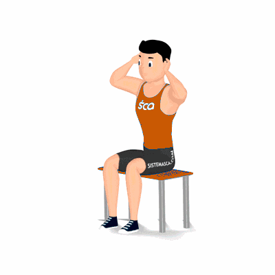

Lombar Sentado

Exercício para fortalecer a lombar. Fundamental para desenvolver maior estabilidade na região do core, que é composta principalmente, pelos músculos abdominais, oblíquos e lombares.
Ficha Técnica
Tipo: Musculação
Grupo Muscular: Costas
Aparelho: Nenhum
Músculos: Nenhum
Como realizar
- Sente em um banco ou nas extremidades de uma prancha;
- Pés ligeiramente separados para se criar uma base estável na execução;
- Cabeça e costas alinhadas, mãos entrelaçadas atrás do pescoço;
- Realize a inclinação do tronco, concentre o esforço sobre os músculos lombares;
- Retorne à posição inicial e repita os movimentos, conforme o número de repetições orientado pelo professor.
 RC STORE
RC STORE